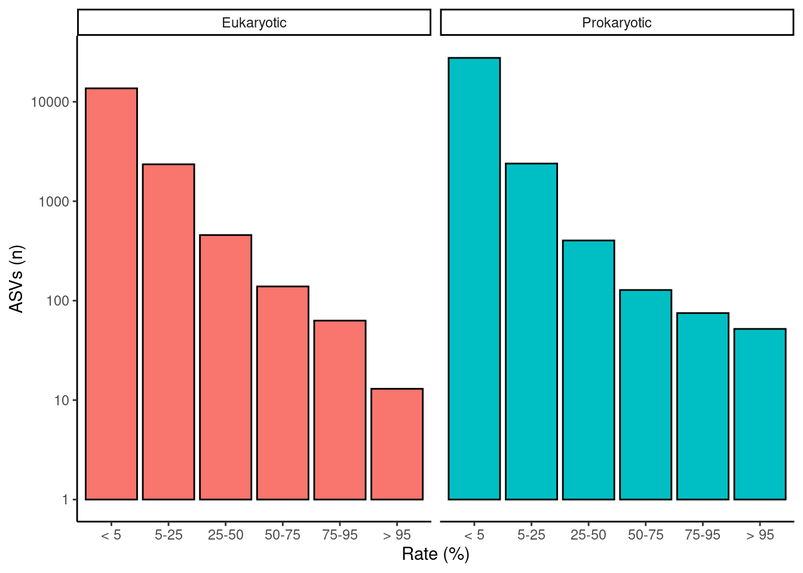
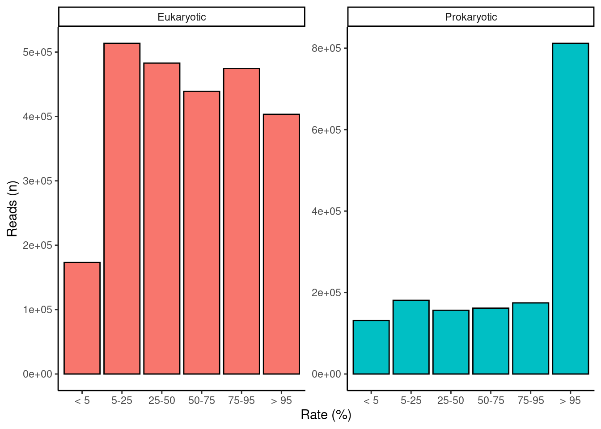
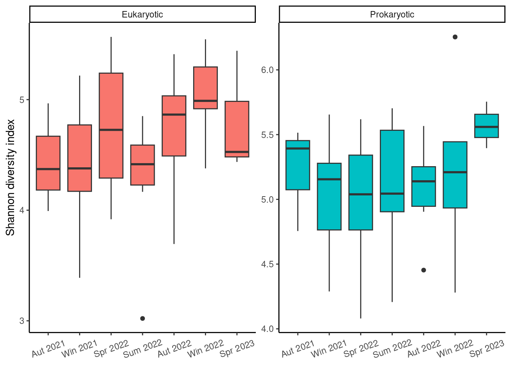
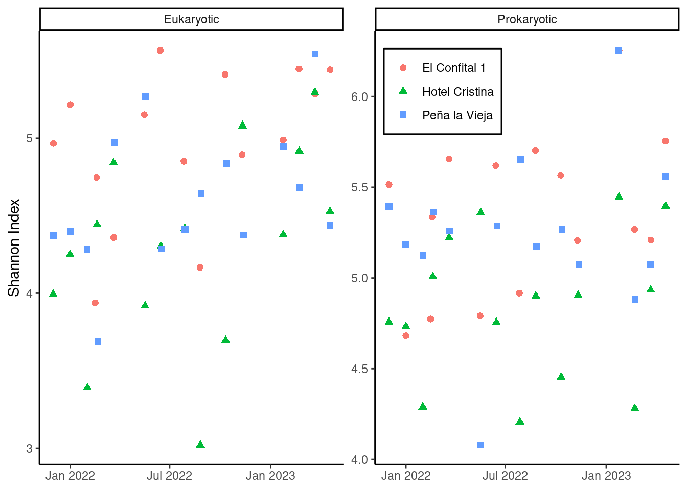

Amplicon Sequence Variants
Target genome region during polymerase chain reaction (PCR) divides the data into two major communities. These regions of rRNA are 16S and 18S, which correspond to prokaryotic and eukaryotic ribosomes, respectively. Each sequence produces an amplicon sequence variants (ASVs), which represent the fundamental observational units of our database. An ASV normally can be mapped to an individual known taxa —we will explore taxonomic diversity in Taxonomical composition—. But it can also happens that some sequences do not correspond to any known taxa.
1 Are all taxa equally common?
Encounters refer to the number of samples in which a taxon was found. This count ranges between 47 encounters —the maximum number of samples— and 1. Encounters are indicative of taxon rarity, ASVs encountered many times are considered common while those encountered a few times are considered uncommon. We can easily calculate de probability of encountering each ASV by diving the number of encounters by the total number of repetitions. To further facilitate the analysis of ASV rate, it was arbitrarily decided to bin the probabilities into 4 equally spaced ranges of 25 %. These ranges of rate are 0–25 %, 25–50 %, 50–75 % and 75–100 %.

2 Are ASVs equally abundant?
The number of reads each taxon has is directly related to its abundance within each particular sample. Relative abundance is preferred over reads because not all samples contained the same number of total ASV reads (Figure 3). This inconsistency can be misleading when comparing data from different samples Gloor et al. (2017). Relative abundance is easily computed by dividing the number of reads of a certain taxon by the total ASV reads within the sample. Figure 5 shows that, overall, rarer taxa are less abundant. Note that, as stated above, there are far more data points in singular and recurring categories than in the ubiquitous category. Longer right tails in infrequent ASV distribution indicate exceptional cases where rare taxa become predominant in the sample. Samples dominated by rare taxa indicate a community response driven by environmental changes.



| ASVs (n) | ASVs (%) | Reads (n) | Reads (%) | |
|---|---|---|---|---|
| Eukaryotic | ||||
| < 5 | 13656 | 81.87 | 173265 | 6.97 |
| 5-25 | 2352 | 14.10 | 513539 | 20.65 |
| 25-50 | 457 | 2.74 | 482875 | 19.42 |
| 50-75 | 139 | 0.83 | 439051 | 17.66 |
| 75-95 | 63 | 0.38 | 474281 | 19.08 |
| > 95 | 13 | 0.08 | 403303 | 16.22 |
| TOTAL | 16680 | — | 2486314 | — |
| Prokaryotic | ||||
| < 5 | 27639 | 90.06 | 131193 | 8.12 |
| 5-25 | 2393 | 7.80 | 180901 | 11.19 |
| 25-50 | 403 | 1.31 | 156475 | 9.68 |
| 50-75 | 128 | 0.42 | 161679 | 10.00 |
| 75-95 | 75 | 0.24 | 174578 | 10.80 |
| > 95 | 52 | 0.17 | 811784 | 50.22 |
| TOTAL | 30690 | — | 1616610 | — |
3 How can we a community ecological diversity?
Community diversity is an indicator of overall microbiome health and fitness. We use the Shannon index as a measure of diversity of species in a community. It is calculated with:
\(H=-\sum p_i\cdot \ln{p_i}\)
Where \(p_i\) is the relative abundance of each particula species. In this case, we use each amplicon sequence variant as a distinct species.
3.1 Did diversity vary locally?

3.2 How did diversity vary over time?


References
Gloor, Gregory B., Jean M. Macklaim, Vera Pawlowsky-Glahn, and Juan J. Egozcue. 2017. “Microbiome Datasets Are Compositional: And This Is Not Optional.” Frontiers in Microbiology 8. https://doi.org/10.3389/fmicb.2017.02224.